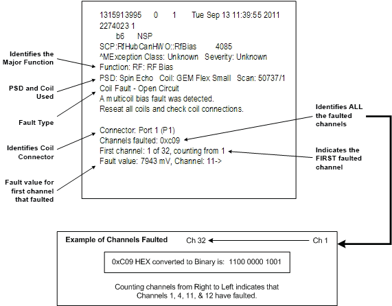
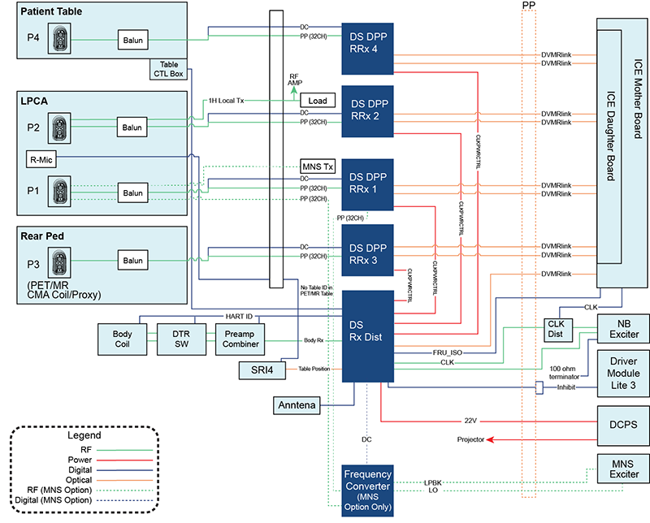
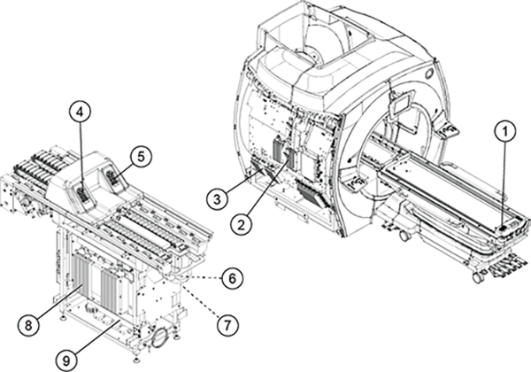
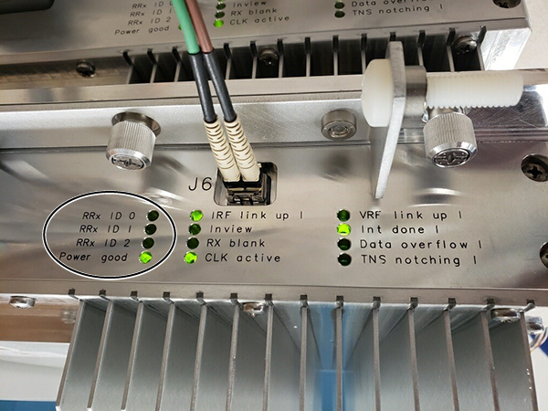
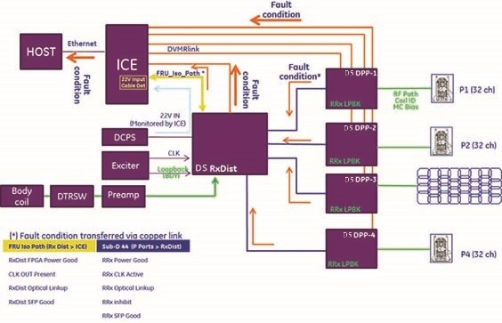
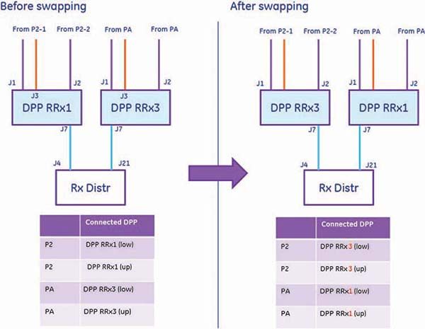
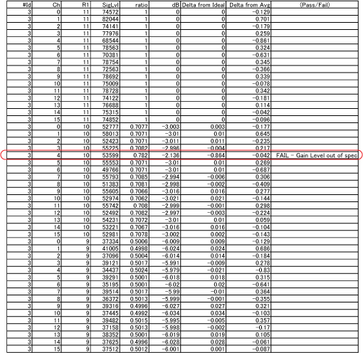
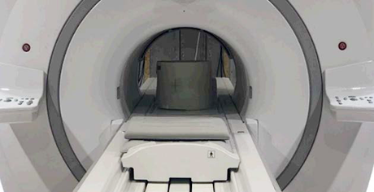
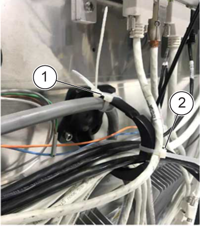
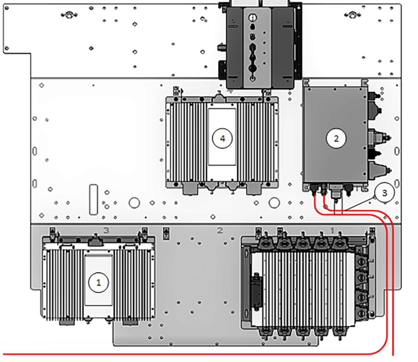

- 00000018WIA30A89F20GYZ
- id_131065113.77
- Sep 11, 2025, 3:02:59 PM
Troubleshooting the DPP receive chain
Troubleshoot problems with the receive chain (DS-DPP).
| Safety | ||||
|---|---|---|---|---|
|
Before working in any GE HealthCare MR suite or doing any GE HealthCare service procedure, you must:
If you have any safety concerns at any time, do not begin work or immediately stop work and move to a safe location. Immediately contact your supervisor or site safety officer for instructions on how to proceed. | ||||
| ||||
Overview
Software version 30 introduces support for the Direct Sample (DS) Digitized Per Pin (DPP) architecture. Terms DPP RRx and DPP Rx Dist used in this document refer to the Direct Sample forms of DPP architecture.
Systems using software version 30 or later will use either the RRx receive chain or the DS-DPP receive chain. To determine the receive chain type, check the Receiver Type field in the Hardware Configure tab of Guided Install. RRx indicates the RRx receive chain, and DPP indicates the DPP receive chain.
Receive chain faults
A typical receive chain fault looks like the following example.

- Use the multicoil bias tool to make sure of faulted channels ().
- Use the Coil Datapath Diagnostic (CDD), which uses the MCRv Tool to isolate receive chain components ().
- Use MCQA to identify coil image quality issues. Refer to 3.0T Coil Manuals.
Available receive chain diagnostics
|
Depending on the fault troubleshooting, use the appropriate diagnostics to help isolate the root cause. Note In addition to Diagnostics, the proprietary extended error message visible from the GE System Log located under the CSD Error Log tab will also help with isolating the issue. Often, the problem can be isolated by doing an action, doing a TPS Reset, and then checking the system error log for changes in message content.
|
Receive chain interconnect diagram


| 1 | P4 (32 channel) |
| 2 | DS DPP RRx4 |
| 3 | DS DPP RRx3 |
| 4 | P1 (32 channel) |
| 5 | P2 (32 channel) |
| 6 (Not Visible) | P3 (CMA coil/proxy) (32 channel) |
| 7 (Not Visible) | DS DPP RRx2 |
| 8 | DS DPP RRx1 |
| 9 | MNS frequency converter |
Refer to Receive chain theory for the function of each module.
DPP receiver module LED patterns
When troubleshooting the DPPs, use the firmware ID that shows in the error log to identify the DPP to which the error is pointing.
Example error:
EM_DPPHWO_COILRECEIVER_5V_PWR_GOOD_FAULT
A receiver module does not detect the 5V power good signal. This will cause TPS reset to fail, and will inhibit scanning until resolved. Firmware ID = RRx-2.
The receiver module obtains its supply power from the RxDistribution module, but is internally regulated on the receiver module itself. Confirm that the cable between the receiver and the RxDistribution modules is properly secured. Otherwise, the failure is internally within the receiver module.
| Firmware ID (lower) | Firmware ID (upper) | LED RRx ID0 | LED RRx ID1 | LED RRx ID2 |
|---|---|---|---|---|
| RRx-1 | RRx-9 | Off | Off | Off |
| RRx-2 | RRx-10 | On | Off | Off |
| RRx-3 | RRx-11 | Off | On | Off |
| RRx-4 | RRx-12 | On | On | Off |
| RRx-5 | RRx-13 | Off | Off | On |
| RRx-6 | LED N/A - Rx Dist | |||
In this example, the error with Firmware ID of RRx-2 is pointing to the DPP that has LED status as: RRx ID0=ON, RRx ID1=OFF, and RRx ID2=OFF.

Troubleshooting support
| Symptom | Context | Possible resolution |
|---|---|---|
| Poor image quality or low SNR | Image quality issues while doing MCQA are a sign of a bad channel. |
|
| Fault condition of DVMRlink | If the DS-DPP RRx DVMRlink is down, the DS Rx Dist DVMRlink can still transmit fault conditions. If the DS Rx Dist DVMRlink is down, the ICE-to-Rx Dist copper link (also called the FRU isolation cable) can transmit some failure information. For more information, see: |
|
| R1GainCal fails | During every TPS reset, the RRx Chain runs a loopback test to calibrate each Receive Channel for each R1 setting. If a channel falls outside the R1 energy tolerance, the Pass/Fail column will indicate Fail for that channel. See R1GainCal fails due to receive chain loopback for more information. | Review the Loopback Cal file:
|
| Intermittent multicoil bias faults | N/A | Run a scan with and without RF enabled to see if there is any difference. There may be noise getting into the bias lines (possibly from a loose quick disconnect). |
| Tx induced RxChain faults | During a Tx induced RxC fault issue, the system will trigger a stop scan with the appearance of an error log. When two or more of the error codes are shown, the receive chain faults are considered as the possible root cause of scan failures. See Tx induced RxC fault caused by microphone cable: Overview for more information. | See Tx induced RxC fault caused by microphone cable: Solution. |
DVMRlink error troubleshooting
All the fault conditions related to inhibit source are transferred through DVMRlink to the host and shown as an error message.

Fault condition of DVMRlink at DS-DPP RRx
Even if DVMRlink at DS-DPP RRx is down, DVMRlink from Rx Dist can transmit DS-DPP fault condition. In this case, the following error message will be shown.
On Error log
- The optical signal dropped out on the DVMR fiber from ICE and RRX-[X] J[Y] Verify that fiber is securely connected.
- Rx Dist module reports that the RRx-[X] module does not have good DVMR link with ICE module.
On ICE_term
- ERROR: RRX-[X] J[Y] fiber lost signal detect.
- ERROR : Fiber link Fault on RRx-[X].
- ERROR : The lower/upper half on Pport RRx-[X] does not have a DVMR fiber link.
- ERROR : Not enough receivers found, expected 7, found [Z].
Fault condition of DVMRlink at Rx Dist is down
Even if DVMRlink at Rx Dist is down, ICE-to-Rx Dist copper link works for FRU isolation in Rx Dist. In this case, the following error message will be shown.
On Error log
- The optical signal dropped out on the DVMR fiber from ICE to Rx Dist Verify that fiber is securely connected.
- A RRX module is not sending status information back to IRF3/IXG/ICE board over its dual fiber cable. The command to Rx Dist could not be completed. Module RRX-6.
On ICE_term
- ERROR: The Rx Distr fiber lost signal detect.
- ERROR : The Rx Distr was not found on DVMR links.
- ERROR : Not enough receivers found, expected 7, found 6.
DS-DPP swapping for troubleshooting
| Notice | |
|---|---|
To examine whether the problem moves with DS-DPP or not, swap the DS-DPP components according to DS-DPP troubleshooting.
For replacement, see Replacing the Direct Sample Digitized Per Pin Remote Receiver (DS DPP RRx).

| Connection to Rx distribution | Lower DPP J1 | Upper DPP J2 | ID0 | ID1 | ID2 | r1Gain cal ID lower | r1 Gain cal ID upper | |
|---|---|---|---|---|---|---|---|---|
| DPP RRx1 | J4 | RRx-1 | RRx-9 | Off | Off | Off | 0 | 8 |
| P1 (1-16) | P1 (17-32) | |||||||
| DPP RRx2 | J3 | RRx-2 | RRx-10 | On | Off | Off | 1 | 9 |
| P2 (1-16) | P2 (17-32) | |||||||
| DPP RRx3 | J2 | RRx-3 | RRx-11 | Off | On | Off | 2 | 10 |
| PE (1-16) | PE (17-32) | |||||||
| DPP RRx4 | J22 | RRx-4 | RRx-12 | On | On | Off | 3 | 11 |
| P4 (1-16) | P4 (17-32) | |||||||
| Rx Dist | NA | RRx-6 | NA | 5 | ||||
| Body 1Ch | ||||||||
R1GainCal fails due to receive chain loopback
During every TPS reset, the RRx Chain runs a loopback test to calibrate each Receive Channel for each R1 setting.
The loopback test stores a log file in the /usr/g/service/log directory.
The log file is named r1GainCal_date.dat (for example, r1GainCal_2015Aug14_154949.dat).
For each R1 value, for each channel, the measured energy drops by 3 dB ± 0.5 dB. If a channel falls outside the tolerance, the Pass/Fail column will indicate Fail for that channel. No entry indicates Pass.

#id in r1GainCal_date.dat represents the DS-DPP RRx location as shown below:
| Lower | Upper | |
| DS-DPP1 | 0 | 8 |
| DS-DPP2 | 1 | 9 |
| DS-DPP3 | 2 | 10 |
| DS-DPP4 | 3 | 11 |
| Rx Dist | 5 | |
The log file continues to R1 value = 1.
Diagnosing the issue:
- Sample log file shows Channel 4 of DS-DPP2 lower fails for R1 of 10.
- The DS-DPP loopback circuit is internal and does not use the exciter source. Rx Dist has exciter loopback capability but the DS-DPP receivers do not.
- The DS-DPP is responsible for setting correct R1 values, therefore the DS-DPP with corresponding channel would be suspect. However, it is best to run Diagnostics and follow the troubleshooting steps in Receive chain (DS-DPP) errors to make sure.
Tx induced RxC fault caused by microphone cable
Overview
| Error code | Description |
|---|---|
| 105078 | There was a link fault on the Grad to ICE J31 DVMR fiber |
| 105061 | The Rx Dist module reports that the RRx module has a power fault |
| 105062 | The Rx Dist module reports that the RRx module has a RefClk fault |
| 105056 | The RRx module has reported a fault with its 5v or 3.3v power supply |
| 113926 | Scanning is inhibited because a receiver module has detected a coil presence fault. Remove the fault condition to restore scanning. |
| 105074 | The RRx-3 module has reported an intermittent fault internal power |
| 113913 | A receiver module detected a transient fault of the 5V, -10V, or 10V power |
| 105057 | RRx module has reported a fault with its -10v power supply |
- Sniffed side electronics plate of magnet with E-field probe, with low level CW Tx signal.
- Highest E-fields were found on the rear mic cable that connects to SRI (~200 V/m vs ~20 V/m at Tx lines).
- Positioning cradle with microphone (LPCA) near the rear end ring, reproduced the Tx induced RxC fault.
- Unplugged microphone cable from SRI and fault went away.
One possible explanation for this kind of fault can be that the microphone cable from SRI (J31, J32) is too close to the DS-DPP power cable (J7) or the DS-DPP itself, resulting in noise cross-talk. To verify and address this issue, the resolution below is recommended.
Solution
- Vertically position the short loader with the body sphere inside on the nesting plate on the patient table.
Figure 7. TLT phantom and sphere on table 
- To obtain the full transmit peak power, set protocol as: Protocol Library = Service; apbcal -> Body scan; Save Rx, then modify CVs: calmode = 2; Download.
- Choose manual prescan and set the TG level (Some failure case TG＞140) at the failing value found earlier. If scan stopped, then noise cross-talk is likely to be the cause.
- Unplug the microphone cable from SRI and move it away from the cable holder.
- Repeat step 3. If the manual prescan passed, then noise cross-talk is confirmed to be the root cause. If not, contact GE HealthCare Technical Service.
- Plug the microphone cable back to SRI and reroute it far away from DS-DPPs and DS-DPP power cables.
- Repeat step 3 to see if manual prescan passed. If not, repeat step 6 and 7 to adjust microphone cable and DS-DPP power cables routing until it passes.
- Secure microphone cable and DS-DPP power cables. Note that the cables must be secured to avoid the issue reappearing in the future. See below for examples of proper cable routing on different systems:

| 1 | DS-DPP power cable routing and cable ties |
| 2 | Microphone cable routing and cable tie |

| 1 | DS-DPP4 |
| 2 | SRI |
| 3 | Microphone cable routing |
| 4 | DS-DPP3 |